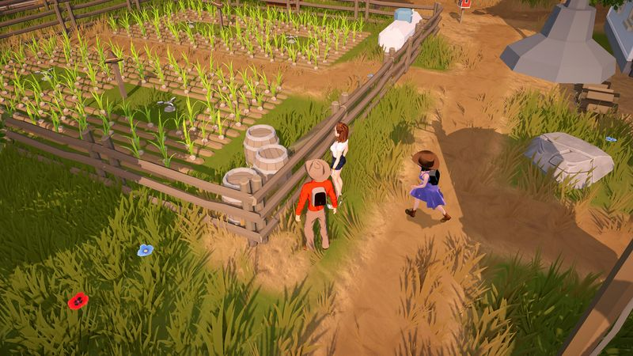
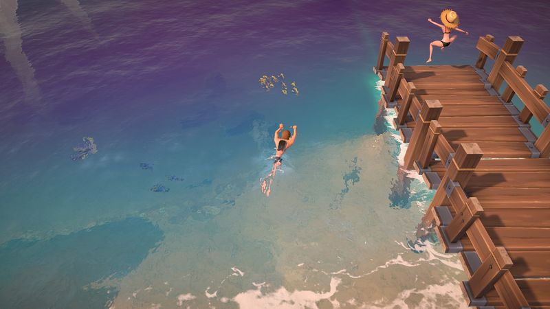

The Ranchers Money-Making Guide: From First Harvest to a Compounding Ranch Economy

The method: profit per day, not price per item
Every ranch-sim economy collapses to one question: how much gold does this activity return per in-game day, per unit of whatever it consumes — plot, animal, or hour? Price per item is a trap. A glamorous crop that sells for triple but takes three times as long to grow earns exactly the same per day as the humble one — except it ties up your land longer, delays your reinvestment, and concentrates your risk in a single harvest.
The two formulas we use across this entire site:
- Crops: profit per plot per day = (sell price × yield − seed cost) ÷ growth days
- Animals: profit per animal per day = (product price × products per cycle − feed/upkeep per cycle) ÷ cycle days
Two refinements separate good ranchers from rich ones. First, count your labor: an activity with great profit per day that eats your entire morning has an opportunity cost — it crowds out a second income stream. Second, count the reinvestment delay: gold returned on day 4 can be replanted on day 4; gold returned on day 12 sits idle in the ground while your neighbor's fast crops compound. This is why fast-cycle crops dominate the early game even when their per-harvest numbers look modest.
You never need a spreadsheet for this. Enter any crop or animal's numbers into our profit calculator and it ranks everything by profit per day automatically — entries persist in your browser, so your personal tier list grows as you play.
Crops vs. livestock vs. processing vs. fishing
The Ranchers has announced four broad income families. Each plays a different economic role — the mistake is treating them as interchangeable.
| Crops | Livestock | Processing | Fishing | |
|---|---|---|---|---|
| Startup cost | Low | High | Medium (machine + input) | Near zero (rod only) |
| First income | One growth cycle | Slow to break even | After machine + input stock | Day one |
| Daily labor | Water, harvest | Feed, collect, care | Load, collect | Pure active time |
| Income pattern | Bursty, per harvest | Steady, recurring | Multiplier on existing goods | Steady but time-capped |
| Scales with | Land & watering capacity | Barn space & feed budget | Machine count | Your free hours |
| Best role | Early-game engine | Mid-game stabilizer | Margin multiplier | Filler income |
Crops: the engine
Crops convert small money into more money faster than anything else at the start. The playbook is boring and unbeatable: plant the best profit-per-day in-season crop you can afford, water daily, sell everything, replant bigger. Two crop slots matter — a fast slot for compounding cash and, once you can parallelize, a premium slot for slower high-per-day crops. Seasons gate everything; see the crop database before every purchase.
Livestock: the stabilizer
Animals invert the crop model: big upfront cost, then steady recurring output that doesn't care about seasons. That makes them the perfect second act — they smooth your income curve and keep money flowing through crop off-seasons. The cardinal rule bears repeating: buy animals only when crop income covers feed with margin. An underfed or unaffordable barn is a cash bonfire. Track real output in the animal database and run break-even math in the calculator before any purchase.
Processing: the multiplier
In nearly every farming sim, raw produce is the worst way to sell. Artisan machines convert the same input into goods worth a meaningful multiple, at the cost of machine time. If The Ranchers ships processing at Early Access (we'll confirm on day one), expect the classic hierarchy: raw < processed < high-quality processed. Processing shifts your bottleneck from land to machine slots, which is why the genre-standard mid-game move is buying more machines rather than more fields. We'll publish confirmed margins as soon as we've tested them.
Fishing: the filler

Fishing's economics are unique: almost no capital, immediate returns, but it sells your time rather than compounding an asset. That makes it the perfect gap-filler — rainy days, evenings, waiting periods between harvests — and a poor main income once your fields are running. Use it to smooth cash flow, never to replace planting.
Reinvestment pacing: the 3-bucket rule
How you split each payout matters as much as how you earned it. For every meaningful sale in the first month, divide the proceeds three ways:
- Operating bucket (~40%): next cycle's seeds and supplies. This bucket keeps the engine running; never raid it.
- Growth bucket (~40%): more plots, buildings, machines, your first animals — anything that raises next month's income ceiling.
- Reserve bucket (~20%): untouchable cash. It covers season transitions, surprise expenses, and the day you miscalculate (there's always one).
The ratios matter less than the discipline. Players who reinvest 100% stall at the first surprise; players who hoard 50% grow too slowly. Adjust the growth share upward as your income stabilizes.
Seasonal cash planning
Seasons are the rhythm of the ranch economy, and each transition is a cash-flow cliff if you let it be. The rules:
- Pre-buy next season's seeds during the final week of the current season, funded by the reserve bucket — day one of a new season should start with seeds already in the ground.
- Taper late-season planting. A crop planted too late to mature before the season turns is a total loss. In the last stretch of a season, plant only fast crops or nothing.
- Let animals bridge the quiet weeks. Livestock output doesn't stop when fields go fallow — another reason the crops-first-then-animals pipeline is the genre's default.
- Schedule big purchases for season start, when a full season of returns lies ahead of them, not season end.
Money in co-op: the economy split
Co-op multiplies labor, which changes the economics in two specific ways. First, your planting ceiling rises — four players can water a far bigger field than one, so fast-cycle crops compound harder. Second, roles let income streams run in parallel: one player farms, one fishes or mines, one handles animals, one runs sales. A solo player chooses between income streams; a crew collects all of them simultaneously.
Two rules keep co-op economies healthy: route every large purchase through one designated quartermaster (duplicate machine purchases are the classic co-op money bonfire), and agree the season's crop plan together — using the calculator and crop database — before day one. The full role breakdown is in the co-op guide.
Launch-week gold roadmap
The sequence we'll be running (and refining with real numbers) from July 30:
- Days 1–3: Maximum fast-cycle planting within watering capacity. Sell everything. Build the reserve bucket. Fish evenings.
- Days 4–7: Reinvest into more plots; buy the first processing machine if available; start ranking candidates in the calculator as you discover real prices.
- Week 2: First animals, sized so crops cover feed with margin. Shift acreage toward the season's best profit-per-day crops.
- Week 3+: Expand machine capacity, add a premium crop slot, and let livestock carry income through the first season transition.
We'll publish a version of this roadmap with confirmed prices and specific crops within hours of launch — check the crop database on day one.
Money-making FAQ
What's the fastest way to make money early in The Ranchers?
Fast-cycle in-season crops, sold immediately, with profits replanted into a bigger plot — plus fishing in your spare hours. It beats every glamorous alternative at the start because it compounds quickly.
Are crops or animals more profitable?
They answer different questions. Crops win the early game on speed and low startup cost; animals win the mid-game on steady, season-independent income. The correct order is crops first, animals once upkeep is covered.
Is processing worth it?
In the genre, almost always yes — processed goods sell for a multiple of the raw input. We'll confirm The Ranchers' exact processing margins at Early Access launch and publish them in the databases.
How much cash reserve should I keep?
Roughly 20% of every payout until you have at least one full season-transition covered (next season's seeds plus a buffer). After that, keep one large purchase's worth as a safety net.
Does fishing replace farming?
No — fishing converts your time into money but doesn't compound an asset. It's the best filler income in the game and a poor main strategy once your fields are established.
Where can I compare actual crop and animal numbers?
Our crop and animal databases are prepared for confirmed launch data; the profit calculator ranks any numbers you enter yourself.
Related guides
- Beginner's Guide — the day-by-day first-week roadmap this economy builds on.
- Multiplayer & Co-op Guide — how to split the economy across a crew.
- Animal Database — products, cycles, and value for every ranch animal.
- Profit Calculator — rank your own discoveries by profit per day.